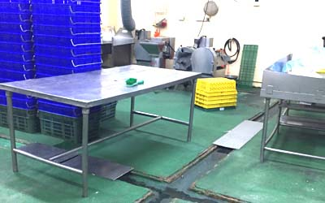

在我們居家環境中,最常見的鼠類為溝鼠與屋頂鼠,目前台灣所發現的老鼠共有14種,對於老鼠的防治大致可分為驅鼠.滅鼠.防鼠等方法,老鼠的全年均可繁殖,且懷孕期只有短短的3個星期，每胎又可生產5-13隻,一年可生產5-6次,在食物不虞匱乏與無天敵下,每隻母鼠可生下30-70隻小老鼠,其後代又將以超倍數成長,
為何選擇我們
1. 具有40多年實戰經驗,且了解國內問題
2.唯一具有研發能力,且使用雞尾酒式消毒,降低環淨及人體傷害

＊老鼠有良好的聽覺與嗅覺,其生性機靈膽小,又易適應多種環境,因此在防治上,我們人類只能加以控制老鼠在我們居住環境的數量,現代的大樓管線林立,加上下水道複雜,一般在防治上,除了將建物之老鼠驅離或消滅外,還需施做防鼠工程,才能有效控制老鼠,不至於出現在室內中
＊老鼠的天敵除了動物.尚有病菌,還有大自然天候的改變,雖然老鼠擅於游泳,但是每當夏季豪雨來臨,下水道的老鼠來不及逃走,會造成鼠類族群的短暫下降,相對而言,此時的老鼠又將更容易逃到地 上之建物內生活
＊當然一定是要有食物來源,水源的便利性,並且隱密性佳,由其以洞穴為主,洞穴中又以木質更受其偏愛,有了舒適的環境,老鼠便利於繁殖後代,
＊基本上老鼠活動時間都是在晚上,偶爾在白天也會見到,如在白天常見到,則是代表此地區老鼠指量極高,基本上都市的老鼠約為人口的2-3倍,因此老鼠的防治以控制族群觀念為主,較能達到預期之效果.
＊最具毀滅性傳染病--鼠疫,它曾造成人類史上超過2億人死亡,鼠疫病原體為耶爾森氏鼠疫杆菌，屬自然疫源性烈性傳染病.除此外老鼠喜愛磨牙啃蝕管路造成電線走火及瓦斯外洩,在台灣曾發起多次災害都由老鼠所引起,業主除了面對嚴重傷亡人員外,還需面對後續賠償及法律問題,因此防鼠極為重要.
一.老鼠直接傳染疾病
1.糞便:沙門氏菌病症(Salmonellosis)
2.尿液:以傳染漢它過濾性病毒(Hantaan Virus)最為出名.
3.身體:食物經其啃食或經過,傳染腸胃疾病
4.咬傷:鼠咬熱
二.老鼠漸接傳染疾病
1.鼠蚤引起相關疾病,以鼠疫(Plague)最為出名
2.鼠蜱所引起傳染病
其它寄生虫如蠕虫類引起之症狀

以台灣地區人口如果有2000-6000萬而計,本島的老鼠大約就有近8000萬,老鼠其它危害還包括
1.糧食損失:稻穀糧倉.食品工廠.居家食物...等等,曾有多次案例,消費者飲用易開罐飲料,因為在商家在儲存飲料尚未重視防鼠安全衛生,使得飲料罐上有老鼠尿液病菌而致病,消費者是可起求償的.
2.經濟損失:咬斷電線包裝.物品造成火災及產品裝潢損壞.瓦斯氣爆..等等,此巨大危害,通常也造成人類生命危害,(老鼠因為其鑿狀無齒根的門齒，不斷地生長，因而需要經常不斷磨牙,才能正常飲食,這是老鼠的天性),台灣每年發生電線走火部分,有很多是老鼠所造成,因此必須特別注意
3.造成精神上恐懼:咬傷人類.擾亂環境,噪音...等等
4.環境上損失:造成污染.森林樹苗危害.

老鼠是屬哺乳類,在防治上, 應以改善環境為主,用藥為輔,用藥方面,大都是使用所謂的抗凝血劑,其主要中毒徵兆為出血,它是將體內的維它命K消除掉,,因此中毒時都是服用維它命K來治療,一般的老鼠藥都有加苦味,是避免人類誤食,但也要小心貓狗之誤食.
驅鼠:治標方法:目前最常使用超音波,不管是變頻或定頻之波長,老鼠都會適應其頻率,除此外所謂的忌避氣,老鼠雖不喜歡其味,但 最終也會適應其味道
滅鼠:治標方法,目前大多使用毒餌,誘捕器械等,毒餌通常用於室外,是因為老鼠如果死在管道間,無法清除,其惡臭將難以忍受.需注意此項.
防鼠:治本方法:阻隔老鼠進出,縮小其活動範圍,予以捕捉,並加強衛生管理.進而阻絕,先進國家都使用此法,也是本公司使用之工法
有老鼠,因此有跳蚤的機率會增大,跳蚤
被跳蚤叮過的人一定都知,被叮之處奇癢無比,造成台灣地區跳蚤居高不下原因,主要是流浪動物所致,
歐美國家較少跳蚤原因也在於此,一般常見的跳蚤都是以貓蚤與鼠蚤,跳蚤發生最多季節為春末夏初時,從右圖可看出其腳有許多毛,這是跳蚤附著在宿主最佳之利器,跳蚤身軀為扁平狀,因此想用手去打死跳蚤是沒有用處的.要用掐的才有辦法.
跳蚤防治可分物理與化學法,視不同狀況加以處理,居家中如有跳蚤,可將床單衣物清洗,並用吸塵器吸塵做為初步的防治.
詳見 跳蚤防治消毒
1. 具有40多年實戰經驗,且了解國內問題
2.唯一具有研發能力,且使用雞尾酒式消毒,降低環淨及人體傷害